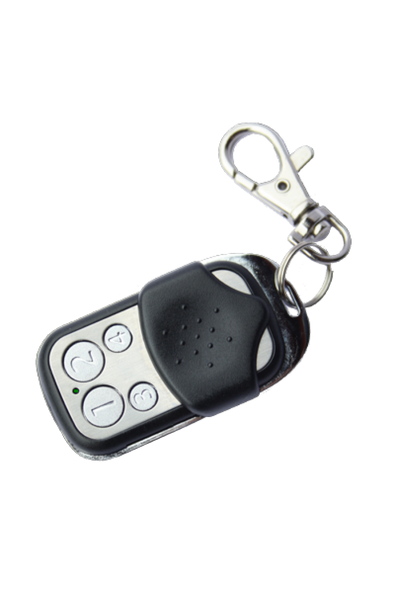
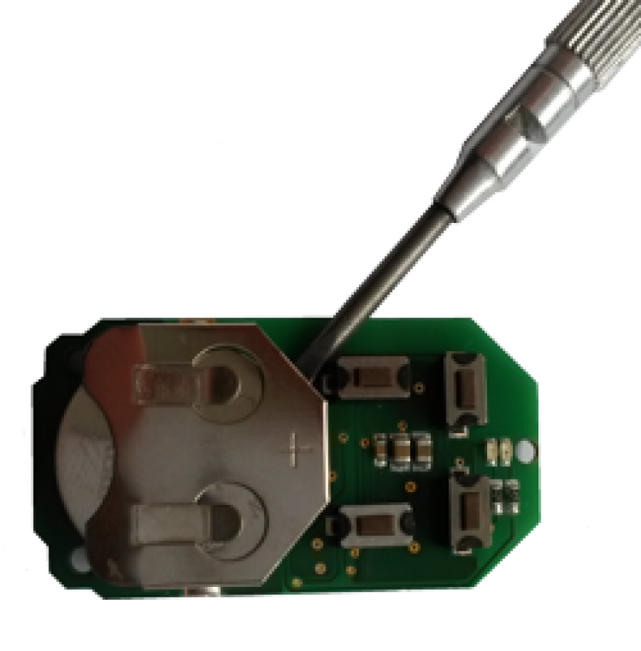

ZME_KFOB2
Firmware Version : 1.4 |
 |
Quick Start
S This device operates as Z-Wave sensor. When in factory default mode a 1 sec. click on any button will trigger the device for 5 sec to accept inclusions (red and green LEDs blink slowly). The device operates in normal control mode or in management mode. Pushing all four buttons for 5 sec. turns the device into management mode for 10 sec. (green LED blinks slowly). In management mode single clock Button 1 confirms inclusion or exclusion, double click starts network wide inclusion mode for 5 seconds.
Please refer to the chapters below for detailed information about all aspects of the products usage.
What is Z-Wave?
This device is equipped with wireless communication complying to the Z-Wave standard. Z-Wave is the international standard for wireless communication in smart homes and buildings. It is using the frequency of 868.42 MHz to realize a very stable and secure communication. Each message is reconfirmed (two-way communication) and every mains powered node can act as a repeater for other nodes (meshed network) in case the receiver is not in direct wireless range of the transmitter.
Z-Wave differentiates between Controllers and Slaves. Slaves are either sensors (S) transmitting metered or measured data or actuators (A) capable to execute an action. Controllers are either static mains powered controllers (C) also referred to as gateways or mobile battery operated remote controls (R). This results in a number of possible communication patterns within a Z-Wave network that are partly or completely supported by a specific device.

- Controllers control actuators
- Actuators report change of status back to controller
- Sensors report change of status of measured values to controller
- Sensors directly control actuators
- Actuators control other actuators
- Remote controls send signals to static controllers to trigger scenes or other actions
- Remote controls control other actuators.
There are two different role a controller can have. There is always one single primary controller that is managing the network and including/excluding devices. The controller may have other functions - like control buttons - as well. All other controllers don't manage the network itself but can control other devices. They are called secondary controllers. The image also shows that its not possible to operate a sensor just from a remote control. Sensors only communicate with static controllers.
Product description
The Z-Wave.Me Key Fob is a 4 button Z-Wave device that can both control other Z-Wave devices and activate predefined scenes in a controller or IP Gateway. Although it is controlling other devices, the KFOB can not act as Z-Wave network controller (primary or secondary) and will always need a Z-Wave network controller to be included into a Z-Wave network. The device can be used in different modes that are selected by configuration parameters:
- Direct control of associated devices
- Control of devices in Proximity
- Control of all devices in the Z-Wave network
- Simple and enhanced scene activation
Batteries
The unit is operated by batteries. Use only batteries of correct type. Never mix old and new batteries in the same device. Used batteries contain hazardous substances and should not be disposed of with household waste!
Battery Type: 1 * CR2032
Installation Guidelines
The device comes ready to use with a battery already installed. A single click on any button will include the device in this status.

For battery change the device needs to be opened by removing the three little screws on the back side of the device. Use a screw driver or any other usable device to gently push out the battery as shown on the picture. During reassembly watch the position of the white rubber and the make sure the silver buttons fit exactly into the nipples of the rubber.
The device can be operated in two different modes: the operation mode and the management mode:
- Operation Mode: This is the mode where the device is controlling other devices.
- Management Mode: The device is turned into the management mode by pushing all four buttons for 5 sec. A blinking LED indicates the management mode. In the management mode buttons of the device have different functions. If no further action is performed the device will turn back to the normal mode after 10 sec. Any management action terminates the management mode as well.
Factory Reset
The device can be set back to factory defaults without performing an exclusion process. Please executes the following steps: (1) Turn the device into Management Mode, (2) click on Button 3, (3) keep button 4 pushed for 4 seconds.
Behavior within the Z-Wave network
I On factory default the device does not belong to any Z-Wave network. The device needs to join an existing wireless network to communicate with the devices of this network. This process is called Inclusion. Devices can also leave a network. This process is called Exclusion. Both processes are initiated by the primary controller of the Z-Wave network. This controller will be turned into exclusion respective inclusion mode. Please refer to your primary controllers manual on how to turn your controller into inclusion or exclusion mode. Only if the primary controller is in inclusion or exclusion mode, this device can join or leave the network. Leaving the network - i.e. being excluded - sets the device back to factory default.
If the device already belongs to a network, follow the exclusion process before including it in your network. Otherwise inclusion of this device will fail. If the controller being included was a primary controller, it has to be reset first.
Once the controller is turned into inclusion mode turn the KFOB into management mode and hit Button 1. Single Click is used for standard inclusion and exclusion, double click is used for network wide inclusion. With this operation the device can be included into a Z-Wave Network from any physical location in the network. This requires a primary controller supporting network wide inclusion. This mode lasts for 20 seconds and stops automatically. Any button press stops the mode as well. The device is excluded by entering management mode and hitting button 1 when the controller is in exclusion mode.
Operating the device
Depending on the button mode and operating modes configured using the configuration parameters the key fob can be used in different ways.
Button modes:
Control is done with two buttons (This is the mode set on default) One group (No. 1) of devices is controlled by button 1 and 3, the other group (No. 3) is controlled by button 2 and 4. Clicking the larger button turned on the loads. clicking the smaller button turns off the loads. In case dimmers are controlled, holding down the larger button will dim up, holding down the smaller button will dim down the load. Releasing the button will stop the dimming function.
Control is done with two buttons and double clicks This mode is same as previous, but double clicks (on/off) or click-holds (dimming) are used to control two more groups: No. 2 and No. 4.
Control is done with single buttons In this mode a group of device is controlled by a single button: single click turns on, double click turns off devices in the group. In case dimmers are controlled, holding down the button will dim up, click and hold down will dim down the load. Group number corresponds to the button label.
Operating modes:
Direct Control of associated devices with On/Off/Dim commands (This is the mode set on default). Devices are controlled using Basic Set On/Off commands and SwitchMultilevel Dim Start/Stop. This mode implements communication pattern 7.
Direct Control of associated devices with only On/Off commands. Devices are controlled using only Basic Set On/Off commands. On dimming Up event On is sent, on dimming Down Off is sent. This mode also implements communication pattern 7.
Switch All commands In this mode a all neighbouring devices will receive SwitchAll Set On/Off command and interpret it according to their membership in SwitchAll groups. This mode implements communication pattern 7.
Direct Control of Devices in proximity Basic Set and SwitchMultilevel Dim commands are sent to a device in proximity (50...100 cm) from the Fob. Attention: In case there are more than one Z-Wave devices nearby all these devices may be switched. For this reason the proximity function should be handled with care. This mode implements communication pattern 7.
Direct Activation of preconfigured scenes Associated devices in an association group are controlled by individual commands defines by Z-Wave command class ‘Scene Controller Configuration’. This mode enhances mode Direct Control of associated devices with On/Off/Dim commands and implements communication patterns 6 and 7.
Scene Activation in IP Gateway If configured correctly the buttons can trigger a scene in a gateway. The scene number triggered is a combination of the group number and the action performed on the button and has always two digits. The group number defines the upper digit of the scene number, the action the lower digit. The following actions are possible:
- 1 = On
- 2 = Off
- 3 = Dim Up Start
- 4 = Dim Down Start
- 5 = Dim Up Stop
- 6 = Dim Down Stop
Example: Clicking/double clicking the button will issue scene triggers, scene 11 (button 1 click, event on), scene 12 (button double click 1, event off, single button control is used in this example)
This mode implements communication pattern 6.
In management mode the following actions can be performed:
- Button 1 - Inclusion/Exclusion: Every inclusion or exclusion attempt is confirmed by hitting this button. Single Click is used for standard inclusion and exclusion, double click is used for network wide inclusion. With this operation the device can be included into a Z-Wave Network from any physical location in the network. This requires a primary controller supporting network wide inclusion. This mode lasts for 20 seconds and stops automatically. Any button press stops the mode as well.
- Button 2 - Send Node Information Frame and Wake up Notification. (see explanation below)
- Button 3 - Factory Default Reset. Please refer to the explanation of this function in chapter Installation.
- Button 4 - Enter into Association mode to assign target devices to one of the four association. Refer to the manuals section about association for more information how to set and unset association groups.
Child Protection
The device can be turn into a child protection mode. In this mode all local operation is disabled.
The child protection mode MUST be turned on wirelessly. However in protected by sequence mode it is possible to unlock the device for local operation by pressing any button within 5 sec. The unlock state will last for 5 seconds.
Wakeup Intervals - how to communicate with the device?
W This device is battery operated and turned into deep sleep state most of the time to save battery life time. Communication with the device is limited. In order to communicate with the device, a static controller C is needed in the network. This controller will maintain a mailbox for the battery operated devices and store commands that can not be received during deep sleep state. Without such a controller, communication may become impossible and/or the battery life time is significantly decreased.
This device will wakeup regularly and announce the wakeup state by sending out a so called Wakeup Notification. The controller can then empty the mailbox. Therefore, the device needs to be configured with the desired wakeup interval and the node ID of the controller. If the device was included by a static controller this controller will usually perform all necessary configurations. The wakeup interval is a tradeoff between maximal battery life time and the desired responses of the device.
The Fob will stay awake right after inclusion for 10 seconds allowing the controller to perform certain configuration. It is possible to manually wake up the device by pushing button 2 in management mode.
The minimum allowed wakeup time is 240s but it’s strongly recommended to define a much longer interval since the only purpose of a wakeup should be the reporting of the battery status or an update of the child protection settings. The device has a periodic wakeup function however this function is disabled by the configuration parameter #25. This will protect the battery in case the controller is accidently configuring a wakeup interval. A wakeup of the fob outside the range of the controller will lead to lots of unsuccessful communication attempts draining the battery. Defining Node id of 0 as a destination of the Wake up Notification will disable the periodical wakeup function as well.
It is possible to set the node ID to 255 to send wakeup notifications as broadcast. In this mode device takes more time to go to sleep and drains battery faster, but can notify all it's direct neighbors about a wakeup.
Node Information Frame
NI The Node Information Frame is the business card of a Z-Wave device. It contains information about the device type and the technical capabilities. The inclusion and exclusion of the device is confirmed by sending out a Node Information Frame. Beside this it may be needed for certain network operations to send out a Node Information Frame.
Pressing Button 2 in management mode will issue a Node Information Frame.
LED Control
- Confirmation - green 1 sec
- Failure - red 1 sec
- Button press confirmation - green 1/4 sec
- Waiting for Network Management mode selection - green blinks
- Waiting for group selection in Association Set Mode - green fast blink
- Waiting for NIF in Association Set Mode - green-red-off blink
Associations
A Z-Wave devices control other Z-Wave devices. The relationship between one device controlling another device is called association. In order to control a different device, the controlling device needs to maintain a list of devices that will receive controlling commands. These lists are called association groups and they are always related to certain events (e.g. button pressed, sensor triggers, ...). In case the event happens all devices stored in the respective association group will receive a common wireless command.
Association Groups:
| 1 | Controlled by button 1 or single clicks of buttons 1 and 3 (max. nodes in group: 8) |
| 2 | Controlled by button 2 or single clicks of buttons 2 and 4 (max. nodes in group: 8) |
| 3 | Controlled by button 3 or double clicks of buttons 1 and 3 (max. nodes in group: 8) |
| 4 | Controlled by button 4 or double clicks of buttons 2 and 4 (max. nodes in group: 8) |
Set and unset associations to actuators
Associations can be assigned and remove either via Z-Wave commands or using the device itself.
SATo control a Z-Wave device from the Key Fob the node ID of this devices needs to be assigned to one of the four association groups. This is a three-step process:
- Turn the Key Fob into management mode and hit button 4 within 10 sec. (LED is blinking green when management mode is reached).
- Within 10 sec. push the button you like the Z-Wave actuator to be assigned with. After 10 sec. the devices goes back to sleep. Single click means adding to this association group, double click means removing the node selected in step (3) from this association group.
- Find the Z-Wave actuator you like to control by the key fob. Hit the button on the device to issue a Node Information Frame within 20 sec. A common way is hitting a control button one or three times. Please consult the manual of the device to be controlled for more information how to issue an Node Information Frame. Any button press on Key Fob at this stage will terminate the process.
Configuration Parameters
Z-Wave products are supposed to work out of the box after inclusion, however certain configuration can adapt the function better to user needs or unlock further enhanced features.
IMPORTANT: Controllers may only allow to configure signed values. In order to set values in the range 128 … 255 the value sent in the application shall be the desired value minus 256. For example: to set a parameter to 200 it may be needed to set a value of 200 minus 256 = minus 56. In case of two byte value the same logic applies: Values greater than 32768 may needed to be given as negative values too.
| Value | Description |
|---|---|
| 0 | Separately |
| 1 | In pair without double clicks (Default) |
| 2 | In pair with double clicks |
| Value | Description |
|---|---|
| 0 | Separately |
| 1 | In pair without double clicks (Default) |
| 2 | In pair with double clicks |
| Value | Description |
|---|---|
| 0 | Disabled |
| 1 | Switch On/Off and Dim (send Basic Set and Switch Multilevel) (Default) |
| 2 | Switch On/Off only (send Basic Set) |
| 3 | Switch All |
| 4 | Send Scenes |
| 5 | Send Preconfigured Scenes |
| 6 | Control devices in proximity |
| Value | Description |
|---|---|
| 0 | Disabled |
| 1 | Switch On/Off and Dim (send Basic Set and Switch Multilevel) (Default) |
| 2 | Switch On/Off only (send Basic Set) |
| 3 | Switch All |
| 4 | Send Scenes |
| 5 | Send Preconfigured Scenes |
| 6 | Control devices in proximity |
| Value | Description |
|---|---|
| 0 | Disabled |
| 1 | Switch On/Off and Dim (send Basic Set and Switch Multilevel) (Default) |
| 2 | Switch On/Off only (send Basic Set) |
| 3 | Switch All |
| 4 | Send Scenes |
| 5 | Send Preconfigured Scenes |
| 6 | Control devices in proximity |
| Value | Description |
|---|---|
| 0 | Disabled |
| 1 | Switch On/Off and Dim (send Basic Set and Switch Multilevel) (Default) |
| 2 | Switch On/Off only (send Basic Set) |
| 3 | Switch All |
| 4 | Send Scenes |
| 5 | Send Preconfigured Scenes |
| 6 | Control devices in proximity |
| Value | Description |
|---|---|
| 1 — 100 | in 10ms units (Default 50) |
| Value | Description |
|---|---|
| 1 | Switch off only (Default) |
| 2 | Switch on only |
| 255 | Switch all on and off |
| Value | Description |
|---|---|
| 0 | No (Default) |
| 1 | Yes |
| Value | Description |
|---|---|
| 0 | No confirmations |
| 1 | Confirm button press |
| 2 | Confirm button press and delivery (Default) |
| Value | Description |
|---|---|
| 0 | Wakeup is blocked (Default) |
| 1 | Wakeup is possible if configured accordingly. |
| Value | Description |
|---|---|
| 0 | No (Default) |
| 1 | To same node as wake up notification |
| 2 | Broadcast to neighbours |
Command Classes
Supported Command Classes- Basic (version 1)
- Battery (version 1)
- Wake Up (version 2)
- Association (version 2)
- Version (version 1)
- Multi Channel (version 3)
- Multi Channel Association (version 2)
- Configuration (version 1)
- Manufacturer Specific (version 1)
- Protection (version 1)
- Node Naming and Location (version 1)
- Multilevel Switch (version 1)
- Scene Activation (version 1)
- All Switch (version 1)
- Scene Controller Configuration (version 1)
- Basic (version 1)
- Multi Channel (version 3)
- Multilevel Switch (version 1)
- Scene Activation (version 1)
- All Switch (version 1)
Technical Data
| IP Rating | IP 20 |
| Battery Type | 1 * CR2032 |
| Frequency | 868.42 MHz (SRD Band) |
| Wireless Range | up to 100 m outside, on average up to 20 m inside buildings |
| Explorer Frame Support | No |
| SDK | |
| Device Type | Slave with routing capabilities |
| Generic Device Class | Remote Switch |
| Specific Device Class | Multilevel Remote Switch |
| Routing | No |
| FLiRS | No |
| Firmware Version | 1.4 |
Explanation of Z-Wave specific terms
- Controller — is a Z-Wave device with capabilities to manage the network. Controllers are typically Gateways, Remote Controls or battery operated wall controllers.
- Slave — is a Z-Wave device without capabilities to manage the network. Slaves can be sensors, actuators and even remote controls.
- Primary Controller — is the central organizer of the network. It must be a controller. There can be only one primary controller in a Z-Wave network.
- Inclusion — is the process of bringing new Z-Wave devices into a network.
- Exclusion — is the process of removing Z-Wave devices from the network.
- Association — is a control relationship between a controlling device and a controlled device.
- Wakeup Notification — is a special wireless message issued by a Z-Wave device to annonces that is is able to communicate.
- Node Information Frame — is a special wireless message issued by a Z_Wave device to announce its capabilities and functions.
Disposal Guidelines
The product contains batteries. Please remove the batteries when the device is not used.
Do not dispose of electrical appliances as unsorted municipal waste, use separate collection facilities. Contact your local government for information regarding the collection systems available. If electrical appliances are disposed of in landfills or dumps, hazardous substances can leak into the groundwater and get into the food chain, damaging your health and well-being.